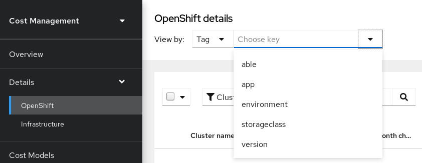

Managing cost data using tagging
This guide explains in depth how tagging works in cost management, and how you can use tagging to best organize and view your resources to manage your costs.
Planning your tagging strategy
Why use tags?
Tags (also sometimes called labels) are a string of custom metadata assigned to resources that your organization can utilize in multiple ways.
In the context of cost management, tags help you to differentiate and allocate costs between various parts of your environment for a more accurate view of your cost data, filling the gap between business logic and the resource. This allows you to assign organizational-specific details to help digest information later.
As many projects and technical services (for example, environment, region, cost center) support a business service, tags can map business concepts to reports providing clarity. In that way, a properly allocated tag can help you to show costs grouped by those business concepts. Tags should be used to complement hierarchies in clouds, or specific hierarchies already present in your clusters (like projects).
Tags are sometimes utilized in more applications than cost management. For example, it is possible and recommended to use them to define certain operations, like business automation, operational profiles, or access and security controls. You can then apply policies based on those tags. However, this document does not consider those use cases. Cloud providers place limits on the number of tags or labels associated with resources, so you should consider all of those uses before defining your tagging strategy for cost management.
Additionally, tags are sometimes used to split resources into smaller units when it is not possible to directly organize resources into projects or subprojects. For example, a shared cluster running many services to provide different business capabilities can use tags to differentiate applications instead of splitting them into projects. Additionally, an AWS account can run multiple different services for projects, and sometimes those services are shared between several applications (like the load balancer or any other shared resource).
Furthermore, tags also help you identify relationships between sources, allowing you to group applications across multiple clusters tagged with the same environment, cost center, or team. Thus, making it possible to identify the costs of an application when running on the development, quality, or production clusters. Tags can also help to identify dependencies when there is not a direct link between a resource, such as the link between an RDS database and the OpenShift project using it.
Considerations for your tagging strategy
When planning your tagging strategy, these considerations can help you decide how to organize and report costs for your sources.
- Methodology
-
It is best practice to implement a Crawl, Walk, Run strategy when initially assigning tags for your resources. Start with the minimum number of tags you feel are required to accomplish your organizational objectives. Then slowly build on that foundation over time. As your understanding of how your organization leverages cost management grows, so will your skill in implementing a tagging strategy.
- Map business to reporting
-
Define the business perspectives you want to report on. For example, your taxonomy for cost management could consider these different perspectives:
Ownership and usage:Defining the owner and the user of the resource: for example, the unique identifier of the user who requested the resource, and the one that is actually consuming the resource.
Tenancy:If your environment is shared, it can be beneficial to understand which group or business unit has requested the resource. When the user is part of different groups, one group needs to be selected. For cost reporting, you can achieve this in many cases using cost center; but department, project, or partner are also good candidates.
Location:For organizations with software deployed globally, cloud providers already identify the region where your resources are running, but your private cloud may be different.
Environment or stage:You may want to differentiate between development and production, so that different cost decisions can be made depending on the environment where you are creating or running the resources. If your development pipeline already includes stages, such as development, testing, staging, pre-production and production, this is a good candidate.
Application / Project / Service / Event:Perhaps your environment is providing a service, such as a group of transient resources for an event (for example, your yearly customer-focused conference). You could even include the application version.
- Standardize your labels
-
Consistency is the most important aspect of a tagging strategy to deliver accurate and comparable cost reporting results.
Create a clear tagging policy that defines what resources need to be tagged, what tags are mandatory and what tags are optional, making sure that there is no room for interpretation.
If the values need to be chosen between a list, make sure that those values are defined, consistent, and easily accessible, or that the list is presented to the user. For example, if you are defining development with the key “Development”, do not also use variations such as “Dev”, “DEV”, or “R&D” to also identify resources as “Development”.
- Tag all elements on your sources (manually or through automation)
-
Since untagged resources cannot be reported, tag as many elements as possible, ideally using automation to prevent human error. Sources have different automation features to take advantage of for tagging:
-
In Azure, you can use Azure Policies to enforce tagging rules and conventions and avoid resources being deployed that do not comply with your expectations. You can create a policy that automatically applies necessary tags during provisioning, that enforces a predefined format for dates, or that makes some tags mandatory for some resource type.
-
In AWS, you can use IAM policies for the same. Additionally, you can use an automation tool such as Ansible to add the necessary tags during provisioning and to make sure that all the resources have been properly tagged.
-
OpenShift Container Platform does not presently have a method of automating labelling.
-
- Review your tags often and refine as needed
-
Define your tags and use them as early as possible with cost management, even if you need to adjust your tagging scheme afterwards.
Review the resulting reports with your business owner and stakeholders early on to ensure your tags are helping you to generate the desired reports, and review your tagging strategy every few weeks to optimize it.
- Select your tag terminology
-
-
Name your resources with names that allow you to identify your resources without accessing metadata, and then continue by adding metadata to it. Many clouds have a guide about how to do this properly; see Additional resources for links.
-
Map your resources into keys and values. Keys will map to perspectives, while values will define the different options allowed for each key. In some cases, the value will be Null.
-
|
Note
|
Not all sources allow the same identifiers, and have different limitations. See Tag specifications by source type for limitations by source. |
Configuring tags and labels in cost management
You must configure tags in each source before cost management can use the tags to automatically organize your cost data.
After adding your sources to cost management:
-
Tag or label resources on each of your sources. See Configuring tags on your sources.
-
(Optional) Enable OpenShift tag grouping to further organize your cost data views for each source. See Enabling OpenShift tag grouping.
-
Refine and add to your tags to optimize your view of cost data. See Considerations for your tagging strategy.
|
Note
|
See the Getting started with cost management guide for instructions on configuring sources. |
How cost management associates tags
Tags in AWS and Azure and labels in OpenShift consist of key:value pairs. When the key:value pairs match, the AWS/Azure and OpenShift costs are automatically associated by cost management. Tag matching in cost management is not case sensitive: for example, an AWS resource tagged APP and an OpenShift resource tagged app are a match:
| Source and resource type | Key | Value |
|---|---|---|
AWS resource (RDS) |
APP |
Cost-Management |
OpenShift pod |
app |
cost-management |
If an AWS resource tag matches with multiple OpenShift projects, the cost and usage of that resource are split evenly between the matched projects.
Note that this is not the case with AWS compute resources that are matched via the instance ID-node relationship. In that case, cost and usage are broken down using information about a project’s resource consumption within the OpenShift cluster.
By default, cost management tracks AWS compute usage and costs by associating the Amazon EC2 instance ID or Azure virtual machine instance ID with the OpenShift Container Platform node running on that instance.
|
Note
|
At this time, OpenShift Container Platform resources running on Google Cloud Platform are not automatically associated in cost management. This feature will be available soon. |
Tag matching hierarchy in cost management
To identify your OpenShift resources running on AWS or Azure instances, cost management matches tags between sources in the following order:
-
Direct resource matching (AWS EC2 instance ID or Azure virtual machine instance ID)
-
Special OpenShift tags
-
Custom tags
Direct resource matching (instance ID)
The sources apply these identifiers automatically. This form of tagging provides a direct link between Azure or AWS instances and OpenShift nodes.
AWS assigns every EC2 instance a resource identifier (a number such as i-01f44b3d90ef90055). OpenShift nodes are matched directly to the AWS EC2 instance the cluster is running on using the AWS resource identifier. The OpenShift reports in cost management (generated from Prometheus data) include this identifier for nodes. Similarly in Azure, each virtual machine instance ID is included in the OpenShift reports for cost management.
Special OpenShift tags
There are three special-case AWS tags you can use to associate cost with OpenShift:
-
openshift_cluster -
openshift_node -
openshift_project
These tags have matching priority over custom tags, and are especially useful in differentiating the costs of different OpenShift clusters running on the same AWS instance.
To use this tagging method to identify an OpenShift cluster, tag your AWS instance with the key openshift_cluster, and provide the OpenShift source name as the value. In the following example, the name of OpenShift source in the cost management application is dev-cluster:
| Source and resource type | Key | Value |
|---|---|---|
AWS resource (RDS) |
|
|
OpenShift cluster |
No tags needed. This will match if the name of the OpenShift source in cost management is |
No tags needed. |
Custom tags
You can use any key:value combination as tags, and cost management will associate identical tag key and values together. You can then group costs by tag key, account, service, region, and more to view your costs and charge for that tag.
| Source and resource type | Key | Value |
|---|---|---|
AWS resource (RDS) |
|
|
OpenShift pod |
|
|
Configuring tags on your sources
In order to control which tags cost management imports, activate or enable the tags you want to view by source:
-
AWS tags must be activated, and are then selected and exported to cost management in the Cost and Usage report. See Activating AWS tags for cost management in the Adding an Amazon Web Services (AWS) source_ guide for instructions.
-
Azure tags are exported to cost management in the cost export report configured in Configuring a daily Azure data export schedule in Getting started with cost management.
-
OpenShift Container Platform labels are exported by Metering and included in the metrics reports that cost management uses as input. Enable tag key grouping in the console.redhat.com application settings to specify which tags to group your cost data by. See Enabling OpenShift tag grouping for instructions.
Adding tags to an AWS resource
Amazon creates certain identifiers automatically, like the EC2 instance resource identifier (a number such as i-123456789), which cost management uses similarly to a tag.
You can also add your own tags at the individual resource level. These tags must be activated for Cost and Usage Reporting to export them to the cost management application.
Configure AWS tags for cost management using the following steps:
-
Create and apply tags to your AWS resources.
See User-Defined Cost Allocation Tags in the AWS documentation for instructions.
-
Activate the tags you want to be collected by the cost management application via the Cost and Usage Report. In the AWS Billing console, select the tags you want to activate from the Cost Allocation Tags area.
See Activating the AWS-Generated Cost Allocation Tags in the AWS documentation for instructions.
Adding tags to an Azure resource
Adding an Azure source creates identifiers for virtual machine instances automatically, which cost management uses similarly to tags to associate Azure resources to related OpenShift resources.
You can also add your own tags in Azure at the individual resource level.
Create and apply Azure tags for cost management using the instructions in the Azure documentation: Use tags to organize your Azure resources and management hierarchy.
Adding tags to a Google Cloud resource
You can apply custom labels to Google cloud resources, such as virtual machine instances, images, and persistent disks. These labels are automatically added to your BigQuery export and sent to cost management.
-
Create and apply labels to your Google Cloud resources.
See User-Defined Cost Allocation Tags in the Google Cloud documentation for instructions.
Viewing labels in an OpenShift namespace
The AWS or Azure tag equivalent in OpenShift is a label, which also consists of a key:value pair. cost management collects OpenShift tag data from nodes, pods, and persistent volumes (or persistent volume claims) using Prometheus metrics and Koku Metrics Operator.
To view the available tags, navigate to a resource in the OpenShift web console. Any assigned labels are listed under the Labels heading, for example: openshift.io/cluster-monitoring=true.
Enabling OpenShift tag grouping
By default, cost management groups OpenShift cost data by cluster, node, and project on the OpenShift details page. Grouping data by tag key can be useful to further customize your view.
To group your cost data by tag key, you must enable the tag keys in the console.redhat.com application settings.
-
You must have Organization Administrator privileges to change these settings in cost management. See Limiting access to cost management resources in Getting started with cost management for more information about user roles and access.
To enable OpenShift tag keys for grouping:
-
Click (Settings) to navigate to Applications > cost management.
-
Click Enable OpenShift labels.
-
Select the keys you want to group by in the cost management application from the Available Tags list, and use the arrows to move the tags to the Enabled Tags list.
-
Click Submit to save your changes.
The enabled tag keys will now be available to group costs from the OpenShift details area of cost management, in the View by list. For example, when you choose View by: Tag:

Disabling tags in cost management
All cloud provider tags are activated in cost management by default. Sometimes having too many resource tags can affect cost management performance. Unnecessary tags can also make managing your costs more complicated when grouping tags and matching key:value pairs. Therefore, Red Hat recommends that you disable tags you are not actively using to reduce these potential issues.
Follow this procedure to disable tags and enhance performance:
-
Navigate to https://console.redhat.com/settings/applications/cost-management.
From this page, your cloud provider tags are sorted into two boxes: Available tags and Tags for Reporting (Available labels and Labels for Reporting for OpenShift Container Platform).
The Tags for Reporting box contains the currently active tags.
-
Click the name of the tag you want to disable in the Tags for Reporting box.
-
Click the < arrow to move the tag into the Available tags box.
-
Click Save.
This tag is now deactivated for the cost management application.
-
Repeat these steps for any additional tags. Alternatively, you can move all of your tags using the << double arrow, or move tags back to the Tags for Reporting box enable them again.
Viewing and exporting your cost data
Filtering your cost data view
Tags allow you to customize your view of cost data. You can view resources by type (for example, project, node, cluster) or tag or label in order to investigate why certain resources show an increase in cost, or when data looks abnormal.
This example shows how to see how much each OpenShift project within a cluster is costing.
-
Your OpenShift cluster added as a cost management data source. See Adding an OpenShift Container Platform source to cost management in Getting started with cost management for instructions.
-
Your cloud infrastructure account added as a cost management data source. See Getting started with cost management for instructions for your cloud provider type.
-
Configure tags on your sources. For tips and configuration instructions, see Configuring tags on your sources.
-
From the OpenShift details menu, click the filter button and select Tag.
-
In the Choose key dropdown list, select the key to filter by. For example, select environment to view clusters with the environment tag. Selecting a tag key reveals another dropdown to choose the value to filter by.
-
In the Choose value dropdown list, select one or more values to filter by. For example, select qe and dev to show cost data for OpenShift projects with these tags.
-
To view more information about each project:
-
Click the arrow icon for each resource to see more information such as the cluster(s) the resource belongs to, and CPU and memory usage, limits, and requests.
-
Click
 (more options) to reveal more viewing options:
(more options) to reveal more viewing options:-
Click View price lists to see rates applied to the OpenShift metrics to calculate the costs.
-
Click View historical data to open the daily usage comparison view, which compares usage, request, and limits by day between months for that resource.
-
Click View all projects or View all tags to see related resources and metadata.
-
-
-
Click Clear all filters to reset your OpenShift details view.
Grouping cost data by tag category
You can group resources by tag category to further investigate your cost data.
Grouping and filtering is useful for finding the root cause of a cost or problem, or investigating part of the environment that acts independently of the rest, such as a cost center or an specific environment.
This allows you to hide information about the rest of the environment to help avoid unneeded complexity in cost data results and allow you to find the desired information, which can otherwise be hidden among other data.
This example shows how an educational course provider who is running a lab environment on OpenShift Container Platform can use tag grouping to filter cost information by student and course.
-
Your OpenShift cluster added as a cost management data source. See Adding an OpenShift Container Platform source to cost management in Getting started with cost management for instructions.
-
Your cloud infrastructure account added as a cost management data source. See Getting started with cost management for instructions for your cloud provider type.
-
Configure tags on your sources. For tips and configuration instructions, see Configuring tags on your sources.
-
OpenShift tag grouping enabled. See Enabling OpenShift tag grouping for instructions.
-
From the OpenShift details page in the Group cost by: field, select the tag key to group the cost by. In this case, select Tag Key:user to show results grouped by student user.
-
In the filter area, select Tag.
-
In the Choose key list, select the tag key user.
-
In the Choose value dropdown list, check the values course_id and course_type to identify how many students have taken the course X and the costs for that course.
-
To view more information about each resource, for example, how much course X has cost:
-
Click the arrow icon for each resource to see more information such as the cluster(s) the resource belongs to, and CPU and memory usage, limits, and requests.
-
Click View Historical Data to open the daily usage comparison view, which compares by month the usage, request, and limits per day for that resource.
-
Click
(more options) to reveal more viewing options:-
Click View historical data to open the daily usage comparison view, which compares usage, request, and limits by day between months for that resource.
-
Click Export data to create a .csv file for for reporting. Specify a daily or monthly aggregate and click Generate and download.
-
-
-
Click Clear all filters to reset your OpenShift details view.
Exporting cost data to a reporting tool
Tags allow you to customize your view of cost data. This is useful when you want to investigate further why certain resources show an increase in cost, or data looks abnormal.
This example shows how to view data for specific OpenShift resources, and export the data to your desired reporting tool.
-
Your OpenShift cluster added as a cost management data source. See Adding an OpenShift Container Platform source to cost management in Getting started with cost management for instructions.
-
Your cloud infrastructure account added as a cost management data source. See Getting started with cost management for instructions for your cloud provider type.
-
Configure tags on your sources. For tips and configuration instructions, see Configuring tags on your sources.
-
From the OpenShift details menu, click the filter button and select Tag.
-
In the Choose key dropdown list, select the key to filter by. For example, select version. Selecting a tag key reveals another dropdown to choose the value to filter by.
-
In the Choose value dropdown list, select one or more values to filter by. For example, select qe and dev to show cost data for OpenShift resources with these tags.
-
To export data about your resources, check the boxes next to each resource you want to export data for. Click Export to open the export options dialog.
-
Specify a daily or monthly aggregate and click Generate and download.
The CSV file will download to your local system, and you can use it in your desired reporting tool.
|
Note
|
You can also export your data as a .csv file from the |
Click Clear all filters to reset your OpenShift details view.
Additional resources
Tag specifications by source type
Tagging standards differ between source types. To use the same tags/labels across sources, you must use the most common of all the restrictions across the different providers.
The following table summarizes tagging and labelling criteria across AWS, Azure and OpenShift Container Platform 4:
| Criteria | AWS | Azure | Red Hat OpenShift |
|---|---|---|---|
Name |
Tags |
Tags |
Labels |
Format |
Key & value |
Name & value |
Key & value Keys: [prefix/]name Prefix: must be a DNS subdomain |
Allows empty value |
Yes |
Yes |
Yes |
Unique label per key |
Yes |
Yes |
Yes |
Case sensitive |
Yes |
No |
Yes |
Limit per resource |
50 |
50 (15 for storage) |
N/A |
Length of key |
128 |
512 (128 for storage) |
253(prefix) / 63(name) |
Length of value |
256 |
256 |
63 |
Allowed characters |
Letters, numbers, and spaces representable in UTF-8, and the following characters: + - = . _ : / @ |
Tag names cannot contain these characters: <, >, %, &, \, ?, / |
The name segment is required and must be 63 characters or less, beginning and ending with an alphanumeric character ([a-z0-9A-Z]) with dashes (-), underscores (_), dots (.), and alphanumerics between |
Restrictions |
The prefix “aws:” is reserved. Tags applied to EC2 can use any character. Not all resource types support tags. |
Not all resource types support tags. Generalized VMs do not support tags. Tags applied to the resource group are not inherited by the resources. |
Prefixes kubernetes.io/ and k8s.io/ are reserved. Not all resource types support tags. |
Notes |
You need to select the tag keys that will be included in cost and usage files and billing reports. |
You can use a JSON string to go over the limit of keys. |
If the prefix is omitted, the label Key is presumed to be private to the user. |
Further reading
The following links provide further guidance on tagging for each source type.
AWS:
OpenShift:
Microsoft Azure: